6 Building a little game
In this chapter we will develop a simple game: Lights Out (http://en.wikipedia.org/wiki/Lights\_Out\_(game))). In doing so, we will increase our familiarity with the Browser, the Inspector, the Debugger, and versioning code with Iceberg. It's important to become proficient with these core tools. Once again, we will encourage you to take a test-first approach to developing this game by using Test-Driven Development.
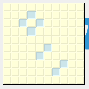
A word of warning: this chapter contains a few deliberate mistakes in order for us to demonstrate how to handle errors and find bugs. Sorry if you find this a bit frustrating, but do try and follow along, as these are also important techniques that we need to see in action.
6.1 The Lights Out game
The game board consists of a rectangular array of light yellow cells. When you click on one of the cells, the cell and its four surrounding cells turn blue. Click again, and they toggle back to light yellow. The object of the game is to turn as many cells blue as possible. "Lights Out" is made up of two kinds of objects: the game board itself, and 100 individual cell objects. The Pharo code to implement the game will contain two classes: one for the game and one for the cells.
6.2 Creating a new package
We'll need to define a package, which we'll do once again in the Browser. If you need a reminder of how to do this, consult Chapter 3 and Chapter 5.
We'll call this package PBE-LightsOut. It might be a good idea to filter the package list once you've created the new package: just type PBE into the filter and you should only see our package.
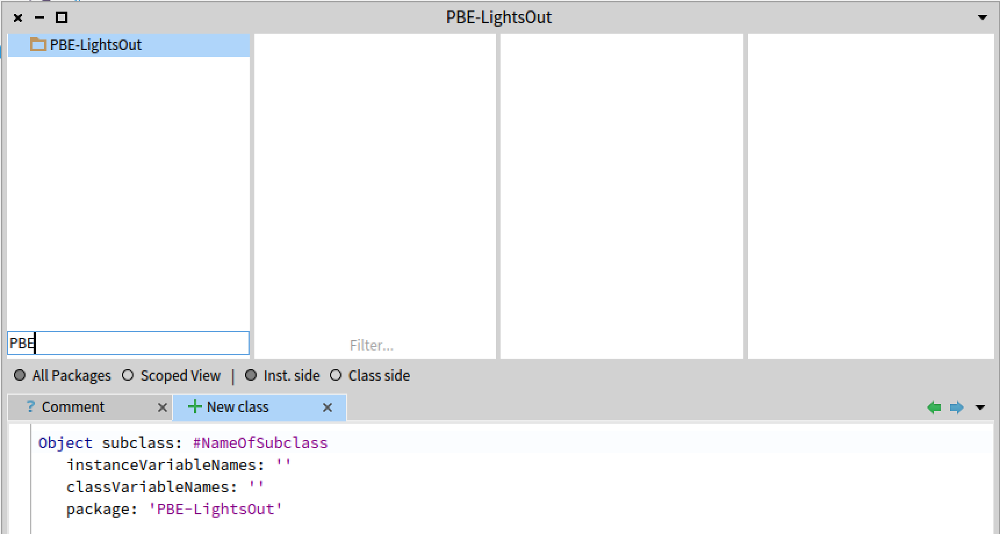
6.3 Defining the class LOCell
At this point there are, of course, no classes in the new package. However, the main editing pane displays a template to make it easy to create a new class (see Figure 6.2). Let's fill it in with what we need.
6.4 Creating a new class
The code in 6.1 contains the new class definition we're going to use:
SimpleSwitchMorph subclass: #LOCell
instanceVariableNames: 'mouseAction'
classVariableNames: ''
package: 'PBE-LightsOut'LOCell class definitionLet's think for a minute about what you're looking at with this template. Is this a special form we fill in to create a class? Is it a new syntax? No, it's just another message being sent to another object! The message is subclass:instanceVariableNames:classVariableNames:package, which is a bit of a mouthful, and we're sending it to the class SimpleSwitchMorph. The arguments are all strings, apart from the name of the subclass we're creating, which is the symbol #LOCell. The package is our new package, and the mouseAction instance variable is going to be used to define what action the cell should take when it gets clicked on.
So why are we subclassing SimpleSwitchMorph rather than Object? We'll see the benefits of subclassing already specialized classes very soon. And we'll find out what that mouseAction instance variable is all about.
To send the message, accept the code either through the menu or the Cmd-S shortcut. The message is sent, the new class compiles, and we get something like 6.3.
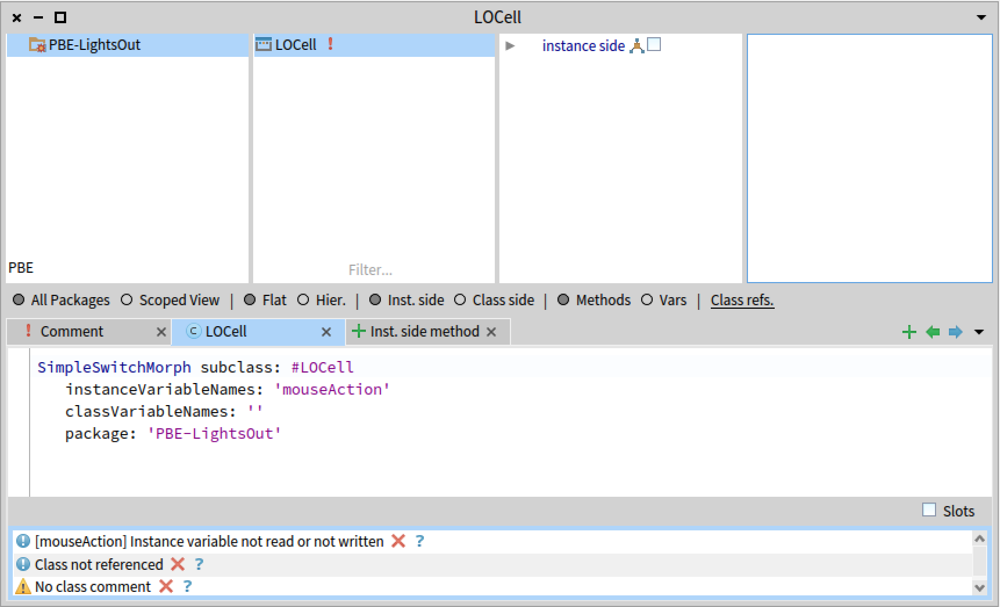
The new class appears in the class pane of the browser, and the editing pane now shows the class definition. At the bottom of the window you'll get the Quality Assistant's feedback: it automatically runs some quality checks on your code and reports them. Don't worry about it too much for now.
6.5 About comments
Pharoers put a very high value on the readability of their code to help explain what's going on, but also on good comments.
Method comments
There's been a tendency in the recent past to believe that well-written, expressive methods don't need comments; the intent and meaning should be obvious just by reading it. This is just plain wrong and encourages sloppiness. Of course, crufty and hard-to-understand code should be worked on, renamed, and refactored. A good comment does not excuse hard to read code. And obviously, writing comments for trivial methods makes no sense; a comment should not just be the code written again in English. Your comments should aim to be an explanation of what the method is doing, its context, and possibly the rationale behind its implementation. A reader should be comforted by your comment, it should show that what they assumed about the code was correct and should dispel any confusion they might have.
Class comments
For the class comment, Pharo offers you a template with some suggestions on what makes a good class comment. So, read it! The format is based on Class (or Candidate) Responsibility Collaborator cards (CRC cards), developed by K. Beck and W. Cunningham. In a nutshell, the idea is to state the responsibility of the class in a couple of sentences, and how it collaborates with other classes to achieve this. In addition, we can state the class' API (the main messages an object understands), give an example of the class being used (usually in Pharo we define examples as class methods), and some details about the internal representation or the rationale behind the implementation.
6.6 Adding methods to a class
Now let's add some methods to our class. First, let's add the Listing 6.2 as instance side method:
LOCell >> initialize
super initialize.
self label: ''.
self borderWidth: 2.
bounds := 0 @ 0 corner: 16 @ 16.
offColor := Color paleYellow.
onColor := Color paleBlue darker.
self useSquareCorners.
self turnOffRecall from previous chapters that we use the syntax 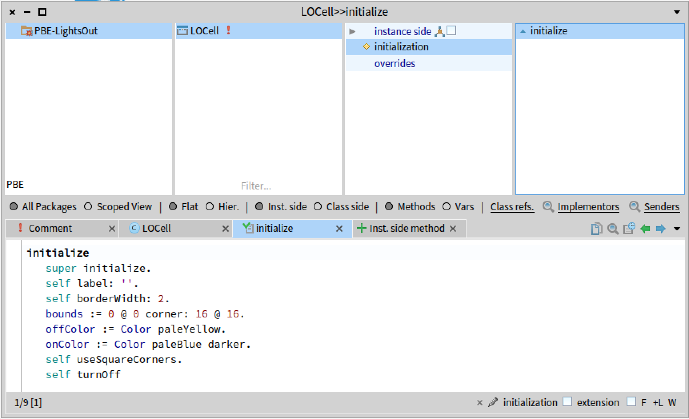ClassName >> methodName to explicitly show which class the method is defined in.
Note that the characters on line 3 are two separate single quotes with nothing between them, not a double quote! is the empty string. Another way to create an empty string is String new. Do not forget to compile the method!
initialize.
Initialize methods
First off, it's another initialize method as we saw with our counter in the last chapter. As a reminder, these methods are special as, by convention, they're executed straight after an instance is created. So, when we execute LOCell new, the message initialize is sent automatically to the newly created object. initialize methods are used to set up the state of objects, typically to set their instance variables, and this is exactly what we are doing here.
Invoking superclass initialization
But the first thing this method does is to execute the initialize method of its superclass, SimpleSwitchMorph. The idea here is that any inherited state from the superclass will be properly initialized by the initialize method of the superclass. It is always a good idea to initialize inherited state by sending a super initialize before doing anything else. We don't know exactly what SimpleSwitchMorph’s initialize method will do when we call it, and we don't care, but it's a fair bet that it will set up some instance variables to hold reasonable default values that a SimpleSwitchMorph is going to need. So we had better call it, or we risk our new object starting off in an invalid state.
The rest of the method sets up the state of this object. Sending self label: '', for example, sets the label of this object to the empty string.
About point and rectangle creation
The expression 0@0 corner: 16@16 needs some explanation. 0@0 constructs a Point object with its x and y coordinates both set to 0. In fact, 0@0 sends the message @ to the number 0 with argument 0. The effect will be that the number 0 will ask the Point class to create a new instance with the coordinates (0,0). Now we send this newly created point the message corner: 16@16, which causes it to create a Rectangle with corners 0@0 and 16@16. This newly created rectangle will be assigned to the bounds variable, inherited from the superclass. And this bounds variable determines how big our Morph is going to be - in effect we're just saying "be a 16 by 16 pixel square".
Note that the origin of the Pharo screen is at the top left, and the y coordinate increases as we go down the screen.
About the rest
The rest of the method should be self-explanatory. Part of the art of writing good Pharo code is picking good method names so that the code can be read like (very basic) English. You should be able to imagine the object talking to itself and saying "Self, use square corners!", "Self, turn off!". Notice that there is a little green arrow next to your method (see Figure 6.4). This means the method exists in the superclass and is overridden in your class.
6.7 Inspecting an object
You can immediately test the effect of the code you have written by creating a new 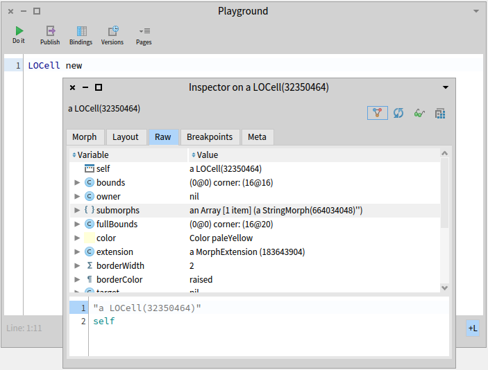 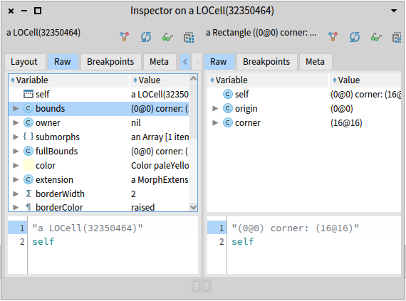LOCell object and inspecting it: Open a Playground, type the expression LOCell new, and inspect it.
LOCell object.LOCell, take a look at them and experiment.
Executing expressions
The bottom pane of the Inspector acts as a mini-playground. It's useful because in this playground the pseudo-variable self is bound to the object selected.
Go to that Playground at the bottom of the pane and type the text self bounds: (200 @ 200 corner: 250 @ 250) and then "Do it". The values should refresh automatically, if this is not the case, click on the refresh button (the blue little circle with arrows) at the top right of the pane. The bounds variable should change in the inspector. Now type the text self openInWorld in the mini-playground and Do it.
The Morphic Halo
The cell should appear near the top left-hand corner of the screen and exactly where its bounds say that it should appear - i.e. 200 pixels down from the top and 200 pixels in from the left.
Meta-click (Option-Shift-Click) on the cell to bring up the Morphic Halo. The Morphic halo represents a visual way to interact with a Morph, using the 'handles' that now surround the Morph. Rotate the cell with the blue handle (next to the bottom-left) and resize it with the yellow handle (bottom-right). Notice how the bounds reported by the inspector also change (you may have to click refresh to see the new bounds value). Delete the cell by clicking on the x in the pink handle.
6.8 Defining the class LOGame
Now let's create the other class that we need for the game, LOGame.
Make the class definition template visible in the Browser main window. Do this by clicking on the package name, or right-clicking on the Class pane. Edit the code so that it reads as in Listing 6.3, and accept it.
BorderedMorph subclass: #LOGame
instanceVariableNames: ''
classVariableNames: ''
package: 'PBE-LightsOut'Here, we subclass BorderedMorph. Morph is the superclass of all of the graphical shapes in Pharo. We've already seen a SimpleSwitchMorph, which is a Morph that can be toggled on and off, and (unsurprisingly) a BorderedMorph is a Morph with a border. We could also insert the names of the instance variables between the quotes on the second line, but for now, let's just leave that list empty.
6.9 Initializing our game
Let's define an initialize method for LOGame. Type the contents of Listing 6.4 into the Browser as a method for LOGame and Accept it.
LOGame >> initialize
| sampleCell width height n |
super initialize.
n := self cellsPerSide.
sampleCell := LOCell new.
width := sampleCell width.
height := sampleCell height.
self bounds: (5 @ 5 extent: (width * n) @ (height * n) + (2 * self borderWidth)).
cells := Array2D
new: n
tabulate: [ :i :j | self newCellAt: i at: j ]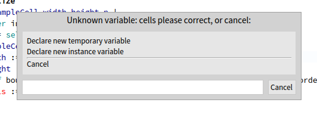cells as a new instance variable.cells (see Figure 6.7). It will offer you a number of ways to fix this. Choose Declare new instance variable, because we want cells to be an instance variable.
6.10 Taking advantage of the Debugger
At this stage if you open a 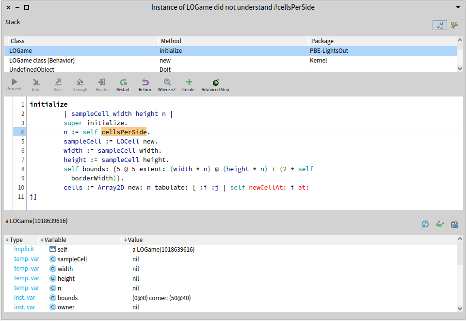 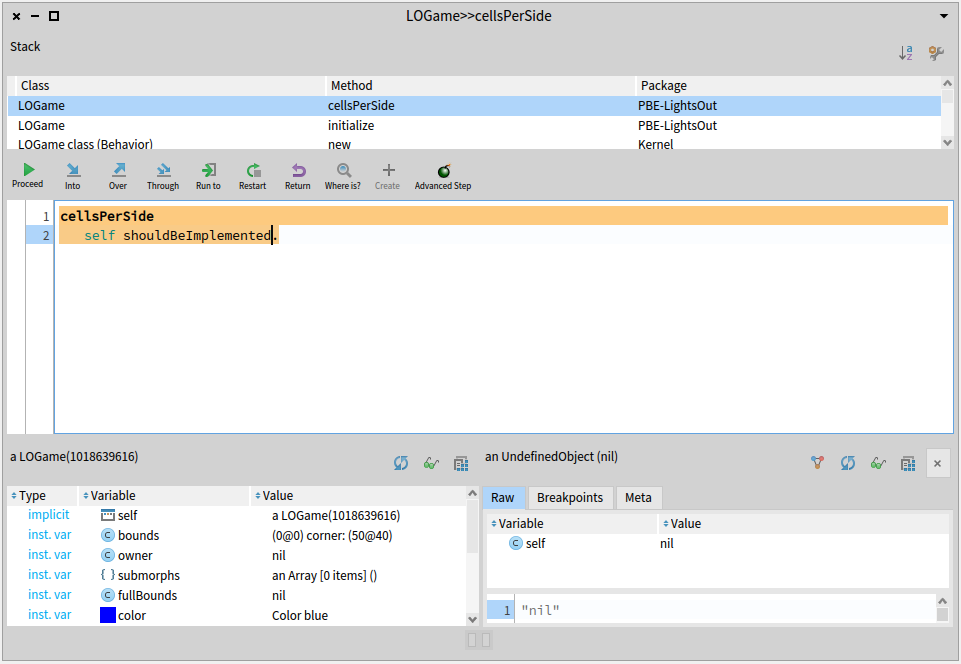Playground, type LOGame new, and Do it, Pharo will complain that it doesn't know the meaning of some of the terms in the method (see Figure 6.8). It will tell you that LOGame doesn't understand the message cellsPerSide, it will open a Debugger. But cellsPerSide is not a mistake; it is just a method that we haven't yet defined. We will do so.
Create in the Debugger and, when prompted, select LOGame, the class which will contain the method. Click on Ok, then when prompted for a method protocol enter accessing. The Debugger will create the method cellsPerSide on the fly and invoke it immediately. The default implementation of a method generated this way is to with a body of self shouldBeImplemented. This is then evaluated, which raises an exception and opens the Debugger again on the method definition (Figure 6.9).
10. One advantage of representing constants as methods is that, if the program evolves so that the constant then depends on some other features, the method can be changed to calculate this value.
LOGame >> cellsPerSide
"The number of cells along each side of the game"
^ 10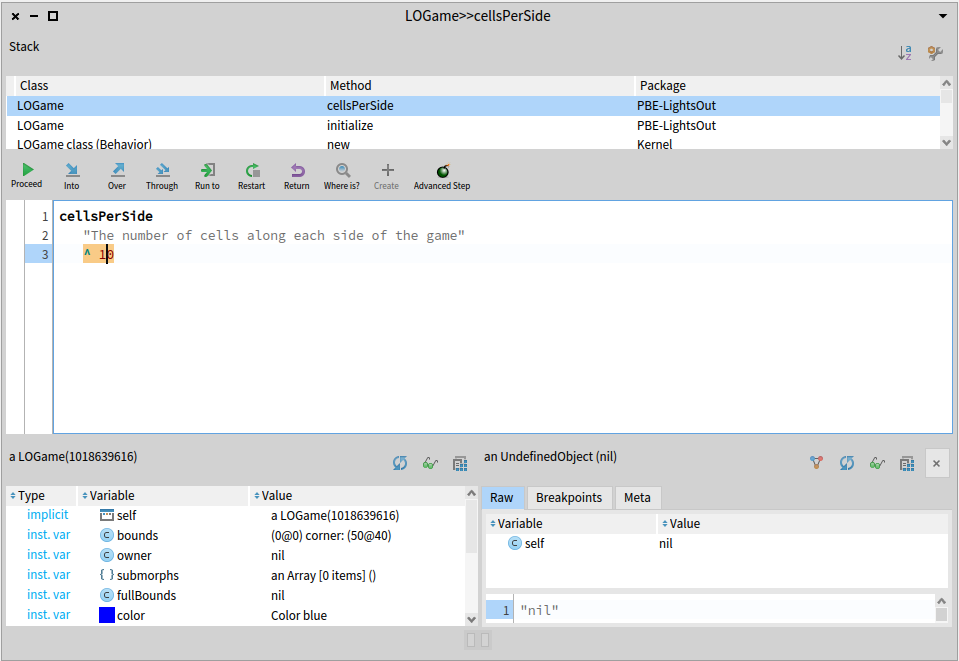cellsPerSide in the debugger.newCellAt:at:.
We could use the same process but for now we'll stop to explain what we've done so far. Close the Debugger, and look at the class definition once again (which you can do by clicking on LOGame on the second pane of the System Browser). You will see that the browser has modified it to include the instance variable cells.
6.11 Studying the initialize method
Let's take a closer look at the initialize method on a LOGame.
LOGame >> initialize
| sampleCell width height n |
super initialize.
n := self cellsPerSide.
sampleCell := LOCell new.
width := sampleCell width.
height := sampleCell height.
self bounds: (50 @ 50 extent: (width * n) @ (height * n) + (2 * self borderWidth)).
cells := Array2D
new: n
tabulate: [ :i :j | self newCellAt: i at: j ]Line 2
At line 2, the expression | sampleCell width height n | declares four temporary variables. They are called temporary variables because their scope and lifetime are entirely limited to the method. Well named temporary variables can be helpful in making code more readable. Lines 4-7 set the value of these variables.
Line 4
How big should our game board be? Big enough to hold some number of cells, and big enough to draw a border around them. And how many cells is the right number? 5? 10? 100? We just don't know yet, and if even if we thought we did know, we'd probably want change our minds later on. So we delegate the responsibility for knowing that number to a method, cellsPerSide, which we'll write in a bit. Don't be put off by this: it's very good practice to write code by referring to other methods that we haven't yet defined. Why? Well, it wasn't until we started writing the initialize method that we realized that we needed it. So when we realize that we're going to need it we can just give it a meaningful name and then move on to defining the rest of our method without interrupting our flow of thoughts. Deferring these decisions and implementations is a superpower.
And so line 4, n := self cellsPerSide., sends the message cellsPerSide to self. The response, which will be the number of cells per side of the game board, is assigned to the temporary variable n.
The next three lines create a new LOCell object, and then we assign its width and height our width and height temporary variables. Why? We're using this instance of LOCell to find out what the dimensions of a cell are, because the most appropriate place to hold that information is in a LOCell itself.
Line 8
Line 8 sets the bounds of our new LOGame. Without worrying too much about the details just yet, believe us that the expression in parentheses creates a square with its origin (i.e., its top-left corner) at the point (50,50) and its bottom-right corner far enough away to allow space for the right number of cells.
Last line
The last line sets the LOGame object's instance variable cells to a newly created Array2D with the right number of rows and columns. We do this by sending the message new:tabulate: to the Array2D class. We know that new:tabulate: takes two arguments because it has two colons (:) in its name. The arguments go after each of the colons. If you are used to languages that put all of the arguments together inside parentheses, this may seem weird at first. Don't panic, it's only syntax! It turns out to be a very good syntax because the name of the method can be used to explain the roles of the arguments. For example, it is pretty clear that Array2D rows: 5 columns: 2 has 5 rows and 2 columns, and not 2 rows and 5 columns.
Array2D new: n tabulate: [ :i :j | self newCellAt: i at: j ] creates a new n by n two-dimensional array (a matrix), and initializes its elements. The initial value of each element will depend on its coordinates. The (i,j)th element will be initialized to the result of evaluating self newCellAt: i at: j.
6.12 Organizing methods into protocols
Before we define any more methods, let's take a quick look at the third pane at the top of the browser. In the same way that the first pane of the browser lets us categorize classes into packages, the protocol pane lets us categorize methods so that we are not overwhelmed by a very long list of method names in the method pane. These groups of methods are called "protocols".
By default, you will have the instance side virtual protocol, which contains all of the methods in the class.
If you have followed along with this example, the protocol pane may well contain the initialization and overrides protocols. These protocols are added automatically when you override initialize. The Pharo Browser organizes the methods automatically, and adds them to the appropriate protocol whenever possible.
How does the Browser know that this is the right protocol? Well, in general Pharo can't know exactly. But if, for example, there is also an initialize method in the superclass, it will assume that our initialize method should be in the same protocol as the method it overrides.
The protocol pane may also contain the protocol as yet unclassified. Methods that aren't organized into protocols can be found here. You can right-click in the protocol pane and select categorize all uncategorized to fix this, or you can just organize things yourself manually.
6.13 Finishing the game
Now let's define the other methods that are used by LOGame >> initialize. You could either do this through the Browser or through the Debugger, but either way let's start with LOGame >> newCellAt:at:, in the initialization protocol:
LOGame >> newCellAt: i at: j
"Create a cell for position (i,j) and add it to my on-screen representation at the appropriate screen position. Answer the new cell"
| c origin |
c := LOCell new.
origin := self innerBounds origin.
self addMorph: c.
c position: ((i - 1) * c width) @ ((j - 1) * c height) + origin.
c mouseAction: [ self toggleNeighboursOfCellAt: i at: j ].Note: the previous code is not correct. It will produce an error - this is on purpose.
Formatting
As you can see there is some indentation and empty lines in our method definition. Pharo can take care of this formatting for you: you can right-click on the method edit area and click on Format (or use Cmd-Shift-F shortcut). This will format your method nicely.
Toggle neighbors
The method defined above created a new LOCell, initialized to position (i, j) in the Array2D of cells. The last line defines the new cell's mouseAction to be the block [ self toggleNeighboursOfCellAt: i at: j ]. In effect, this defines the callback behavior to perform when the mouse is clicked. And so the corresponding method also needs to be defined:
LOGame >> toggleNeighboursOfCellAt: i at: j
i > 1
ifTrue: [ (cells at: i - 1 at: j) toggleState ].
i < self cellsPerSide
ifTrue: [ (cells at: i + 1 at: j) toggleState ].
j > 1
ifTrue: [ (cells at: i at: j - 1) toggleState ].
j < self cellsPerSide
ifTrue: [ (cells at: i at: j + 1) toggleState ]The method toggleNeighboursOfCellAt:at: toggles the state of the four cells to the north, south, west and east of cell (i, j). The only complication is that the board is finite, so we have to make sure that a neighboring cell exists before we toggle its state.
6.14 Final LOCell methods
To complete the Lights Out game, we need to define two more methods in class
LOCell this time to handle mouse events.
First, mouseAction: in Listing 6.7 is a simple accessor method:
LOCell >> mouseAction: aBlock
mouseAction := aBlockFinally, we need to override the mouseUp: method. This will be called automatically by the GUI framework if the mouse button is released while the cursor is over this cell on the screen:
LOCell >> mouseUp: anEvent
self toggleState.
mouseAction valueFirst, this method toggles the state of the current cell. Then it sends the message value to the object stored in the instance variable mouseAction. In LOGame >> newCellAt: i at: j we created the block [self toggleNeighboursOfCellAt: i at: j ] which will all the neighbors of a cell when it is evaluated, and we assigned this block to the mouseAction instance variable of the cell. Therefore sending the value message causes this block to be evaluated, and consequently the state of the neighboring cells will toggle.
6.15 Using the Debugger
That's it: the Lights Out game is complete! If you have followed all of the steps, you should be able to play the game, consisting of just two classes and seven methods. In a Playground, type 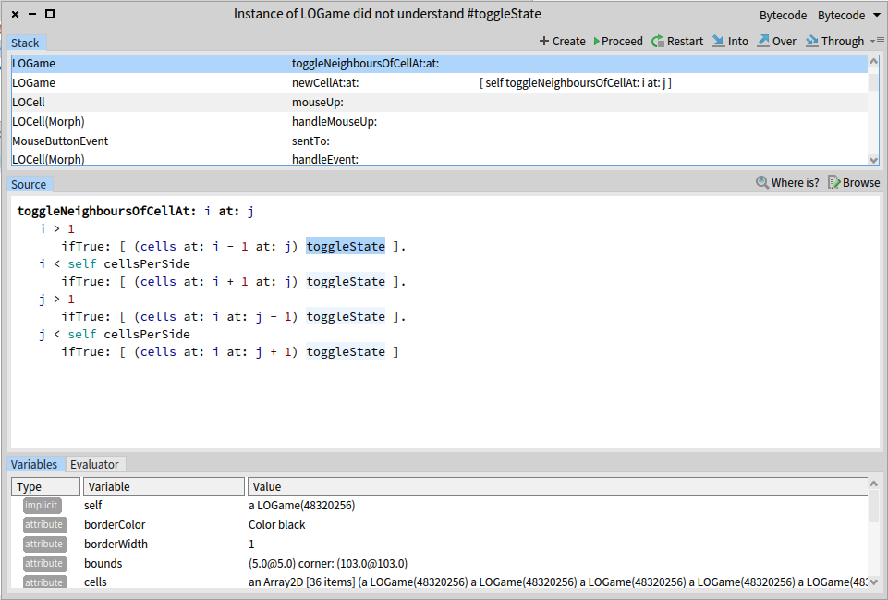LOGame new openInHand and Do it .
The game will open, and you should be able to click on the cells and see how it works. Well, so much for theory... When you click on a cell, a Debugger will appear. In the upper part of the debugger window you can see the execution stack, showing all the active methods. Selecting any one of them will show, in the middle pane, the code being executed in that method, with the part that triggered the error highlighted.
Click on the line labeled LOGame >> toggleNeighboursOfCellAt: at: (near the top). The Debugger will show you the execution context within this method where the error occurred (see Figure 6.11).
toggleNeighboursOfCell:at: selected.toggleState message has been sent to an instance of LOGame, while it should clearly have been an instance of LOCell. The problem is most likely with the initialization of the cells matrix. Browsing the code of LOGame >> initialize shows that cells is filled with the return values of newCellAt:at:, but when we look at that method, we see that there is no return statement there! By default, a method returns self, which in the case of newCellAt:at: is indeed an instance of LOGame. The syntax to return a value from a method in Pharo is ^.
Close the Debugger window and add the expression ^ c to the end of the method LOGame >> newCellAt:at: so that it returns c:
LOGame >> newCellAt: i at: j
"Create a cell for position (i,j) and add it to my on-screen representation at the appropriate screen position. Answer the new cell"
| c origin |
c := LOCell new.
origin := self innerBounds origin.
self addMorph: c.
c position: ((i - 1) * c width) @ ((j - 1) * c height) + origin.
c mouseAction: [ self toggleNeighboursOfCellAt: i at: j ].
^ cOften, you can fix the code directly in the Debugger window and click Proceed to continue running the application. In our case, because the bug was in the initialization of an object, rather than in the method that failed, the easiest thing to do is to close the Debugger window, destroy the running instance of the game (by opening the halo with Alt-Shift-Click and selecting the pink x), and then create a new one.
Execute LOGame new openInHand again because if you use the old game instance it will still contain the blocks with the old logic.
Now the game should work properly... or nearly so. If we happen to move the mouse between clicking and releasing, then the cell the mouse is over will also be toggled. This turns out to be behavior that we inherit from SimpleSwitchMorph. We can fix this simply by overriding mouseMove: to do nothing as in Listing 6.10
LOCell >> mouseMove: anEventAnd now finally we are done!
6.16 Accessor conventions
If you are used to getters and setters in other programming languages, you might expect these methods to be called setMouseAction and getMouseAction. The Pharo convention is different. A getter always has the same name as the variable it gets, and a setter is named similarly, but with a trailing ":" to allow it to take an argument, hence mouseAction and mouseAction:. Collectively, setters and getters are called accessor methods, and by convention they should be placed in the accessing protocol. In Pharo, all instance variables are private to the object that owns them, so the only way for another object to read or write those variables is through accessor methods. Instance variables can of course be accessed in subclasses too, but you can never access another object's instance variables - not even ones in another instance of your class, or the class object itself.
6.17 About the debugger
By default, when an error occurs in Pharo, the system displays a Debugger. However, we can fully control this behavior and make it do something else. For example, we can write the error to a file, or we can even serialize the execution stack to a file, zip it and then reopen it in another Pharo image. When we are developing our software, the Debugger is available to let us go as fast as possible. But in a production system, developers will often want to control the Debugger to prevent their mistakes interfering too much with their users' work.
And if all else fails...
First, do not stress! It's perfectly normal to make a mess of things when you program. If anything, it's the rule and not the exception. Probably the most annoying thing that can happen when you're starting to experiment with graphical elements in Pharo is that the screen becomes cluttered with seemingly indestructible widgets. Don't panic. Try and get an Inspector up on one of them by using a meta-click (Option-Shift-Click or equivalent) to open the Morphic halo, select the menu handle, "debug > inspect". Once you get an Inspector open you're home free:
- if you are inspecting the game itself:
self delete. - if you are inspect a game cell:
self owner delete.
6.18 Saving and sharing Pharo code
Now that you have Lights Out working, you probably want to save it somewhere so that you can archive it and share it with your friends. Of course, you can save your whole Pharo image and show off your first program by running it, but your friends probably have their own code in their images, and don't want to give that up to use your image. Pharo and its entire community uses Git to version source code and provides Iceberg a powerful tool to hide some low-level details from you.
Use Iceberg and Git to version your code
When developing the counter example in the previous chapter, we showed you the basics of using Iceberg and Git to save, share, and version your projects, and you should really do the same with Lights Out. Using Git to save Pharo code is by far the best solution. If you would like to learn more about Iceberg, and you're feeling impatient, then you should feel free to skip ahead to Chapter 7.
(Optional) Writing code to files
While saving your code with Git is the best way to do it, Pharo also offers a way to write code to files on your disc. It is rudimentary and does not actually version the code but it can be handy on certain occasions.
You can also save the code of your package by writing it to a file, an action commonly called "filing out" by all Pharoers and related communities. The right-click menu in the Package pane will give you the option to select Extra > File Out the whole of the 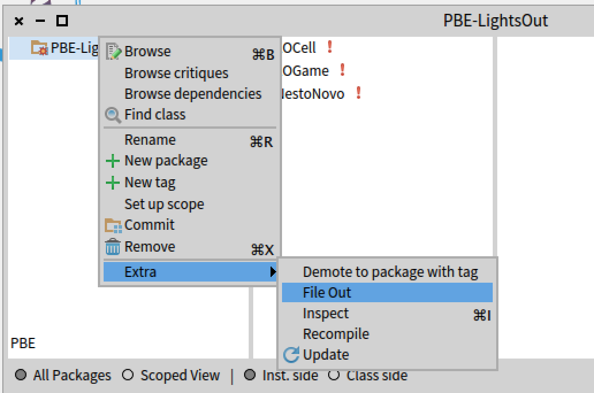 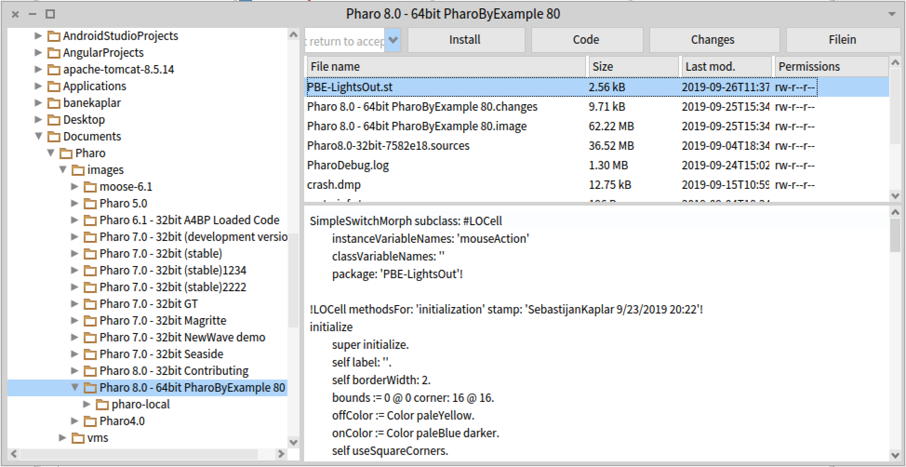PBE-LightsOut package. The resulting file is more or less human readable. You can email this file to your friends, and they can "file it in" with their own image.
PBE-LightsOut package.PBE-LightsOut package (see Figure 6.12). You should now find a file named PBE-LightsOut.st in the same folder on disk where your image is saved. Have a look at this file with a text editor to get a feel for what the code looks like when it's in a file. If you don't want to leave Pharo to look at the file, try inspecting 'PBE-LightsOut.st' asFileReference' in a Playground.
6.19 Chapter summary
In this chapter, we've had a chance to reinforce what we've learned about Pharo so far, and to apply it to writing a simple game using the Morphic framework. We've learned how to open the Morphic halo around graphical elements on the screen, how to manipulate them, and (importantly) how to get rid of them.